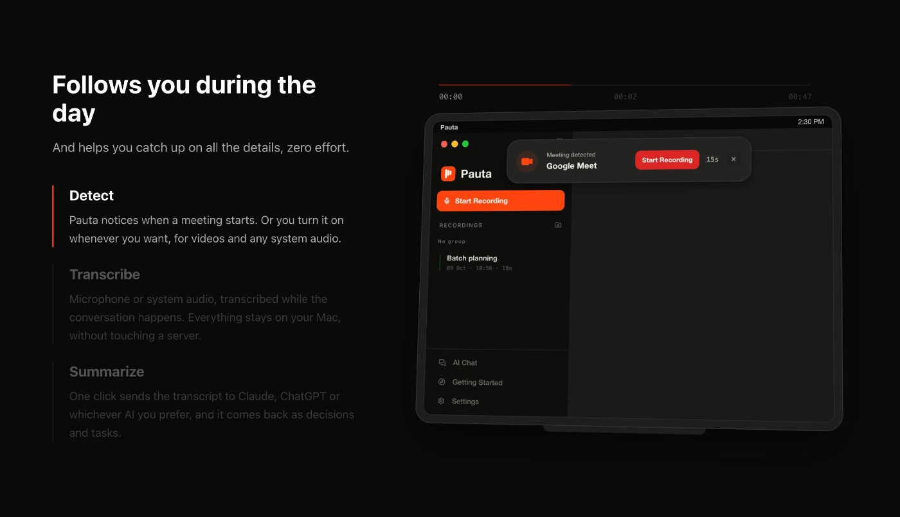

录完之后，仍要找得到原来的内容
语音消息和会议录音容易保存，却不容易在一周后找到某个决定。Pauta把录音转成文本，再整理摘要和待办，目标是让说过的话变成可回查的材料。这里的几个输出用途不同：转写保留较完整的内容，摘要帮助快速了解，待办则需要人确认责任和期限。若把三者混成一份结论，省下的阅读时间可能换来遗漏限定条件。用户仍应能区分某人明确承诺与系统归纳的建议，特别是访谈中说到可能、暂定或还要确认的地方。公开说明没有提供任务自动执行的证据，因此待办应按记录来理解。
Pauta · 产品／Product Hunt发现

语音消息和会议录音容易保存，却不容易在一周后找到某个决定。Pauta把录音转成文本，再整理摘要和待办，目标是让说过的话变成可回查的材料。这里的几个输出用途不同：转写保留较完整的内容，摘要帮助快速了解，待办则需要人确认责任和期限。若把三者混成一份结论，省下的阅读时间可能换来遗漏限定条件。用户仍应能区分某人明确承诺与系统归纳的建议，特别是访谈中说到可能、暂定或还要确认的地方。公开说明没有提供任务自动执行的证据，因此待办应按记录来理解。
Pauta作者强调录音和数据默认留在设备，并允许离线工作。PH讨论进一步问到：如果后来针对整个项目提问，是否又把内容发到云端？作者回应仍使用本地模型，项目数据留在电脑上。这个答复把隐私主张落实到后续操作，而不只是在保存录音时说本地。它仍然是作者说明，未经过网络流量审计。对用户而言，重要区别是记录和提问是否共享同一数据边界，而不是产品名字里有没有“私人记忆”。本地处理也不说明电脑备份、共享账户或导出文件自动获得保护。
外部AI不是Pauta公开描述中的使用前提，用户可以选择连接。对已经使用云端助手的人，这保留了继续加工材料的路径；对只想保存会议的人，基础流程又不必依赖同一个外部服务。连接之后哪些文字会被发送、提供方如何保留数据，需要按所选连接另查，不能把默认本地的说明套用到所有模式。与手工录音加文档整理相比，Pauta把转写和归纳放在同一产品里；与云端会议服务相比，核心取舍是处理位置及相应的设备负担。公开资料没有给出本地模型的最低内存、耗电或长录音速度。
作者列出的当前平台是macOS和iOS，Windows仍在测试。有人问是否能处理Telegram语音消息，这说明了一个具体使用场景，但可见讨论没有给出支持确认，不能直接写进功能表。其他评论关心长会议和本地问答，尚没有独立准确率或完整试用报告。PH的日期榜能证明十一月六日出现，不能证明这是软件第一次开放。官网在本次读取中失败，因此完整价格和试用条件没有采纳第三方目录的数字。对准备使用的人，先确认自己的设备和录音来源能否进入流程，比假设所有聊天附件都支持更实际。